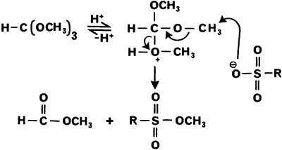

HTML by Rhodium
Sulfonic acids can be smoothly converted to their methyl and ethyl esters by reaction with trimethyl and triethyl orthoformate, respectively.
In connection with our continuing studies directed towards the elucidation of lignin sulfonate structures1,2, we wish to report new methodology for the facile methylation (and ethylation) of sulfonic acids with trimethyl (and triethyl) orthoformate respectively.
Currently, the only means of converting sulfonated lignin fragments into stable, organic soluble derivatives, under relatively mild conditions, is to prepare their a) S-benzylthiourea salts3 or b) acetyl lignin sulfonate methyl esters4. This latter method, requiring initial acetylation of a suspension of lignin sulfonates in acetic anhydride/pyridine, and subsequent methylation of the silver salt of the sulfonic acid with methyl iodide, is somewhat tedious.
Table 1
Alkylation of Sulfonic Acids with Trialkyl Orthoformates
Sulfonic Acid |
Reagent |
Product | Yield |
|
1 |
Me-SO2-OH | HC(OMe)3 | Me-SO2-OMe | 43%* |
| Me-SO2-OH | HC(OEt)3 | Me-SO2-OEt | 80%* | |
2 |
Et-SO2-OH | HC(OMe)3 | Et-SO2-OMe | 83%* |
| Et-SO2-OH | HC(OEt)3 | Et-SO2-OEt | 73%* | |
3 | p-Me-Ph-SO2-OH | HC(OMe)3 |
p-Me-Ph-SO2-OMe | 99% |
| p-Me-Ph-SO2-OH | HC(OEt)3 |
p-Me-Ph-SO2-OEt | 98% | |
4 | 4-OH-3-MeO- PhCH2-SO2-OH |
HC(OMe)3 |
4-OH-3-MeO- PhCH2-SO2-OMe | 85% |
5 | 4-OH-3-MeO- PhCHCHCH2-SO2-OH |
HC(OMe)3 |
4-OH-3-MeO- PhCHCHCH2-SO2-OMe | 82% |
* Yield low due to volatility of product
Methyl sulfonates5 and methyl sulfinates6 can be readily prepared by the treatment of the corresponding acid with diazomethane. However, with sulfonated lignin model compounds e.g. 5 (Table 1) alkylation of both phenolic and sulfonic acid functionalities occur2. Since we were interested in the selective alkylation of the sulfonic acid group, we turned our attention to other methods.
Previously, it had been reported7 that carboxylic acids can be efficiently converted to their esters by the simple treatment of an alcoholic solution of the acid with 2.5 equivalents of trimethylsilylchloride (TMSCl). Unfortunately, even in the simplest case (p-toluenesulfonic acid), esterification with methanol and TMSCl gave only unreacted starting material, as evidenced by 1H-NMR and infrared spectroscopy.
We therefore addressed the action of trimethyl orthoformate on p-toluenesulfonic acid, since the former has been used successfully for both acid-catalysed ketalisations8,9 and esterification of carboxylic acids10,11. Thus, when acid 3 (see Table 1) was allowed to stand in excess trimethyl orthoformate (17 equivalents) for 14 h. at room temperature, a quantitative yield of methyl p-toluenesulfonate was obtained. In a similar fashion, triethyl orthoformate gave the corresponding ethyl ester. The general applicability of this method can be seen from Table 1. Each of the reactions gave a single product in high yield, unless it was very volatile and then recovery was lower. Note also that in the case of sulfonic acids 4 and 5, containing free phenolic groups, only the acid functionality was alkylated.
Scheme 1
Scheme 1 represents a possible pathway for the formation of these products.
For non-volatile products, the alkylation could also be carried out by heating to reflux, e.g., the acid 3 with trimethyl orthoformate for 30 min.
Further, since paucidisperse lignosulfonic acids can be dissolved in methanolic solution2, we have investigated the use of the alkylating agent in methanol. Thus, 3 was smoothly converted to methyl p-toluenesulfonate using a 1:1 solution of methanol:trimethyl orthoformate, and slowly distilling off the methanol over a period of 1 h.
General Procedure
A solution of the sulfonic acid (200 mg) in trimethyl (or triethyl) orthoformate (2 mL) was either allowed to stir at room temperature for 14 h., or heated to ref lux for 30 min., under an atmosphere of nitrogen. The excess orthoformate was then removed under vacuum (0.5 mmHg) to give the corresponding methyl (or ethyl) ester. Where the solubility of the substrate was poor, the reagent was mixed with an equal volume of methanol, following which slow distillation over 1 h. gave the required ester in high yield.